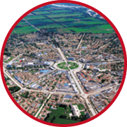
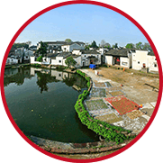
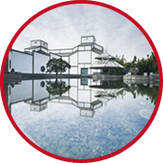

- 易学名家
- 风水设计课堂
- 案例分享
- 易学智慧
- 新闻动态
- 课程报名
室内设计风水不是迷信！而是人与自然的高度和谐
越成功的人，越大型的项目，越追求设计风水
-

八卦城的雏形据说是由南宁嘉定三年道教龙门派教主长春真人丘处机应成吉思汗之邀请前往西域勘察设定的，700多年后又经精通易理的伊犁屯垦使邱宗浚修建。现在它已成为研究易经如何应用于城市建筑的重要基地。
——新疆 八卦城
-

你信风水和不信风水是不一样的，过去一直很“顺”的人，他一般是不信的，遭遇过波折，感觉无法把握自己命运的人他就会相信。我现在肯定属于很信风水的人。
——巨人网络董事长兼CEO史玉柱
-
马云在CCTV2《赢在中国》的一段发言：“你们相信做生意是有风水的吗？我相信风水，人家跟我讲科学，我相信风水且记住以下风水原理，改变千变万化但要注意，搬新房子往往会开始倒霉，而且任何城市你在当地说我建一个当地过高的大楼这种公司都倒霉，我统计了一下，这个企业的大楼过高的，他一定是倒霉的。”
——马云
-

建筑师都相信建筑风水。比如说我们建筑要摆房子，要靠山傍水，这也是建筑风水。我觉得我们应该相信建筑风水，风水的宗旨就是理气，即寻找生气。而有生气的地方应该是：避风向阳，山清水秀，流水潺潺，草木欣欣，莺歌燕舞，鸟语花香之地。这恰恰和生态建筑不谋而合! 我寻找肯定属于很信风水的人。
——贝律铭 美籍华人建筑师
作为设计师的您，是否也有以下的困惑？！
风水先生总说：
· 业主客厅电视机位置不对，不能摆设电视机，可是按照风水先生的要求，客厅沙发就根本没办法摆放---我晕！
· 灶位按我的设计来讲是要破财不利的！可是按照先生的说法就根本不利于操作流程——我晕！
· 主卧室位置不符合业主夫妻命理，建议重新调整房间。可是按风水先生指定的主卧空间不管是空间大小、还是 通风与光照都不适合做主卧 ——我晕！
· 你们现在安排的楼梯位置不对，建议先停工！可一听风水先生所指示他认为适合的楼梯位置——我晕！
当设计师遇到带着风水先生一起来审核设计的业主时
我想我又要改了！
点击立即咨询
室内设计风水大师 带您突破桎梏
让您的设计与风水环境高度和谐
名师介绍
史建南 设计风水大师
毕业于北京师范大学，从事室内设计工作20年，
全球50名国际著名室内设计师，被“创意中国”评为中国十大样板房顶尖室内设计师。
主要著作：
《室内风水学》、《软装设计》、《材料工艺学》《装饰工程预算》、《设计原理》等。
主要作品和参与设计：
|
国家大剧院京华厅内饰工程设计
|
重庆龙湖水晶郦城样板房设计
|
|
广州希尔顿酒店设计
|
北京蓝溪谷地样板房设计
|
|
深圳国际会展中心设计
|
深圳天鹅堡样板房设计
|
|
香港希尔顿酒店设计施工
|
观澜高尔夫别墅样板房设计
|
|
深圳万科金域蓝湾样板房设计
|
三亚鲁能星城样板房设计
|
行业荣誉：
中国易经研究会专家、高级风水师、国家软装设计师行业标准开发组组长
人力资源社社会保障部人才鉴定中心高级考评员、国际商业美术A级设计师
中国高级室内设计师 、中国室内设计师行业协会理事、重庆市设计师行业协会名誉会长
国家软装设计师行业标准开发组组长
人保部人才鉴定中心高级考评员、华南师范大学环境艺术系客座教授、深圳大学客座教授
陈天迪老师 (中国香港)
陈老师从管理哲学的角度入手研究国学易理，十多年研究中国古典哲学中有“群经之首”称号的《易经》，透过易经观察事物的变化规律，学习易理以不变应万变的思维模式，探索易经的三易（人与人相处和谐，人与自然相处和谐，人与自身相处和谐），凭《五行性格学》成为了中国易经研究学会（央视网签约单位）的会员
- 特色课程 -
易理玄学-阳宅风水于室内设计的应用
天行健，君子以自强不息；地势坤，君子以厚德载物。
课程可学习到各种避忌与改善方法：
·功能房（厨房、厕所、阳台）无法更改，影响到家人运气；
·房子非四正的缺角，影响到家人健康；
·卧室的床具摆放（靠窗、靠厕、向西、面镜、横梁、侧角、对门），影响睡眠健康；
·洗手间的禁忌；
·穿堂煞的避忌；
·沙发的放置；
·电视柜的摆放；
·客厅墙画的放挂法；
·神台与鱼缸的安置；
·流年的客厅布置；
·装修兴工、验收、入伙的避煞操作。
……
什么样的设计师适合学习室内风水设计？
·认可和喜爱国学文化；
·在室内设计领域有1-3年以上实际设计工作经验；
·熟悉平面图、施工图；
·懂CAD操作软件；
·想提升自己设计竞争力，服务好品质客户！
很多人懂设计却不懂风水，而风水先生只懂风水却丝毫不懂设计
有多少设计师为此伤透了设计案！
室内设计风水培训让您把设计和风水高度融合：
让设计和谐与人文，让住宅和谐与自然
室内设计要遵循人与住宅、住宅与环境、环境与自然的和谐
室内设计要遵循人与磁场、磁场与环境、环境与自然的统一
室内设计风水大师利用国学理论知识、结合多年的设计经验、为你解读设计中遇到的住宅结构问题、周围环境问题、以及光、风、声、水和路的相生相克自法则，化解住宅缺陷，完善使用功能。
室内设计大师详细解析室内设计过程中的空间布局、色彩搭配、光影效果以及家具陈设应该注意的事项。
详细讲解室内设计中鲁班尺、罗盘的使用秘籍。
利用吉祥摆件化解室内外环境中的各种形煞。
详细解读室内设计中的光、风、声、水学、生命信息学、人体工程学、住宅环境学
这是一次与室内设计风水大师的问道之旅！
这是一次与设计与环境的巅峰对决
我想了解参与